18. Gukesh Dommaraju
Gukesh D, cudowne dziecko indyjskich szachów, został najmłodszym mistrzem świata w historii, detronizując Dinga Lirena w wieku zaledwie 18 lat. Znany z chłodnej precyzji, odporności psychicznej i odwagi w kluczowych momentach, łączy dojrzałość Kasparowa z dynamiką Carlsena — i dopiero się rozkręca.
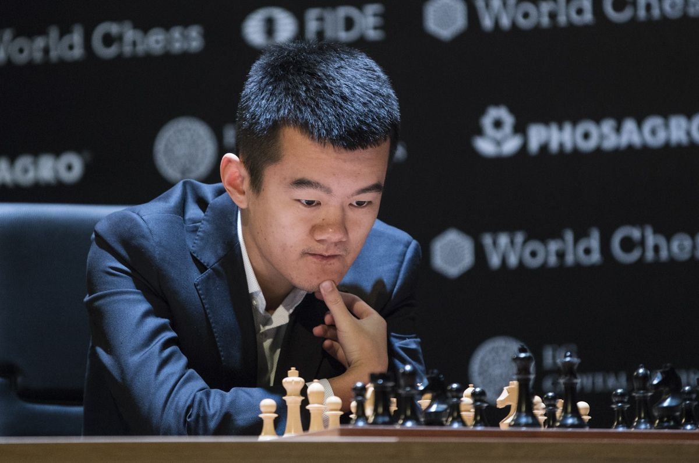
17. Ding Liren
Ding, pierwszy chiński mistrz świata, zdobył tytuł po rezygnacji Carlsena, a nie bezpośrednim zwycięstwie nad nim. Choć cichy i wytrwały, po objęciu tronu prezentował niestabilną formę, co budzi wątpliwości co do jego pozycji na szczycie szachowego świata.
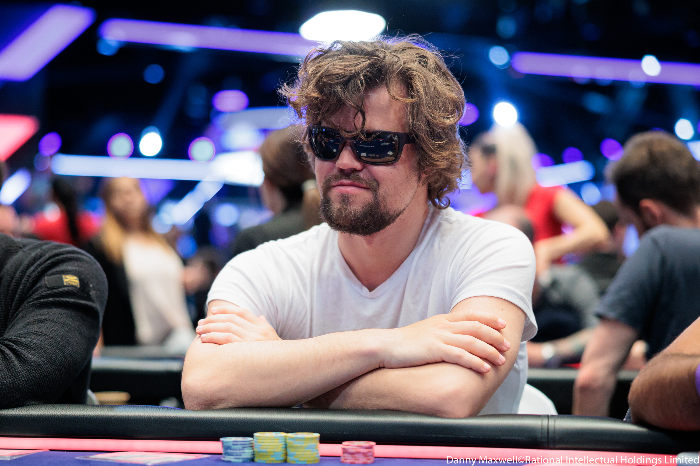
16. Magnus Carlsen
Szachowy Mozart. Norweg, który zrewolucjonizował podejście do treningu, gry i marketingu. Gra intuicyjnie, skutecznie, potrafi jak nikt inny "zamęczyć przeciwnika". Gra bardzo praktycznie i tylko czeka na swój moment, a jak go dostanie, to nie wypuszcza. Uważany za najlepszego szachiste wszechczasów.
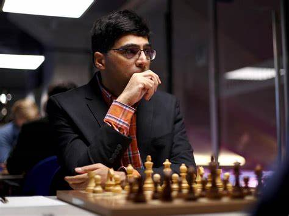
15. Viswanathan Anand
"Tygrys z Madrasu". Błyskotliwy, szybki, niezwykle inteligentny. Pierwszy mistrz świata z Indii, który zainspirował pokolenia Azjatów do gry w szachy. Znakomity w każdym tempie gry.
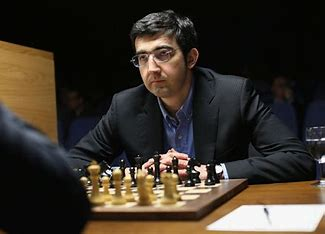
14. Vladimir Kramnik
Cichy zabójca, który detronizował Kasparowa. Wprowadził obronę berlińską na salony, zyskał sławę mistrza równowagi i precyzji. Grał prosto, ale skutecznie jak chirurg z lodem w żyle.
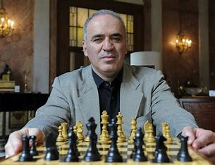
13. Garry Kasparow
Wulkan energii i wizjoner gry. Połączył dynamikę z przygotowaniem komputerowym. Jego starcia z Karpowem to epopeja. Kasparow to nie tylko mistrz, ale i lider ery cyfrowej w szachach.
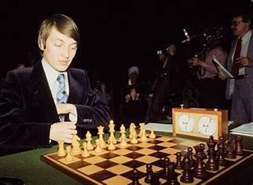
12. Anatolij Karpow
Lodowaty strateg. Karpow grał bez emocji, z chirurgiczną precyzją. Wyciskał przewagi z pozornie równych pozycji, zabijając powoli i bezlitośnie. Szachowa perfekcja w czystej postaci.
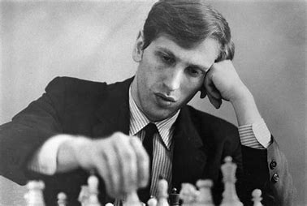
11. Bobby Fischer
Samotny rewolucjonista. Geniusz, który pokonał ZSRR w jednej partii. Jego obsesyjna dążność do doskonałości uczyniła go legendą, choć jego panowanie było krótkie. Zmienił szachy raz na zawsze.
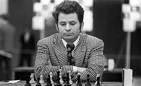
10. Boris Spassky
Uniwersalny geniusz. Potrafił grać taktycznie i pozycyjnie, dostosowując się do przeciwnika. Jego pojedynki z Fischerem to legenda, a sam Spassky był gentlemanem szachownicy.
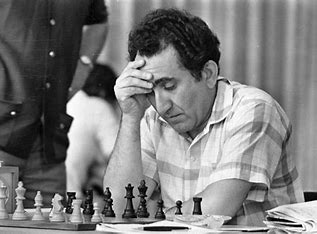
9. Tigran V. Petrosian
Człowiek-twierdza. Nikt nie bronił się jak Petrosian. Jego styl był antytezą Tala – spokojny, cierpliwy, niemal nie do przebicia. Mistrz profilaktyki i cichej dominacji.
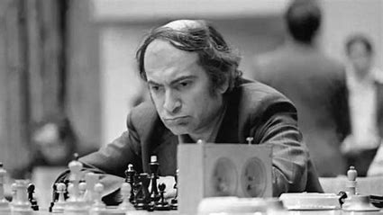
8. Mikhail Tal
"Magik z Rygi", czarodziej taktyki. Jego partie to pokaz sztuczek, kombinacji i brawury. Grał z fantazją, często ryzykując wszystko. Wygrywał, bo widział to, czego inni nie dostrzegali nawet po analizie.
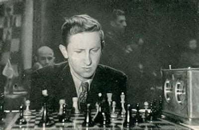
7. Vasily Smyslov
Mistrz harmonii i elegancji. Grał tak, jakby każdy ruch był nutą w szachowej symfonii. Oprócz szachów był też śpiewakiem operowym, co odzwierciedlało się w jego grze – pełnej gracji i wyczucia.
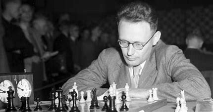
6. Mikhail Botvinnik
Inżynier szachów i twórca radzieckiej szkoły. Podchodził do gry systematycznie, niemal naukowo. Był mentorem takich legend jak Kasparow czy Karpow. W jego partiach widać dyscyplinę i strategiczne mistrzostwo.
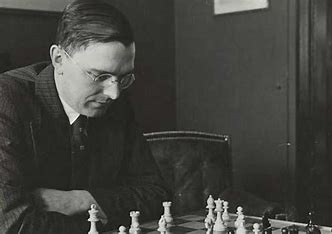
5. Max Euwe
Holenderski mistrz logiki. Z zawodu matematyk i nauczyciel, na szachownicy walczył rozumem, nie emocjami. Jego zwycięstwo nad Alekhinem było niespodzianką, ale pokazującą, że precyzja może pokonać chaos.
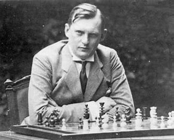
4. Alexander Alekhine
Szachowy artysta z duszą wojownika. Jego partie przypominały poematy taktyczne, pełne zaskakujących zwrotów akcji. Grał z pasją, a jego dźwięczna analiza przeszła do historii.
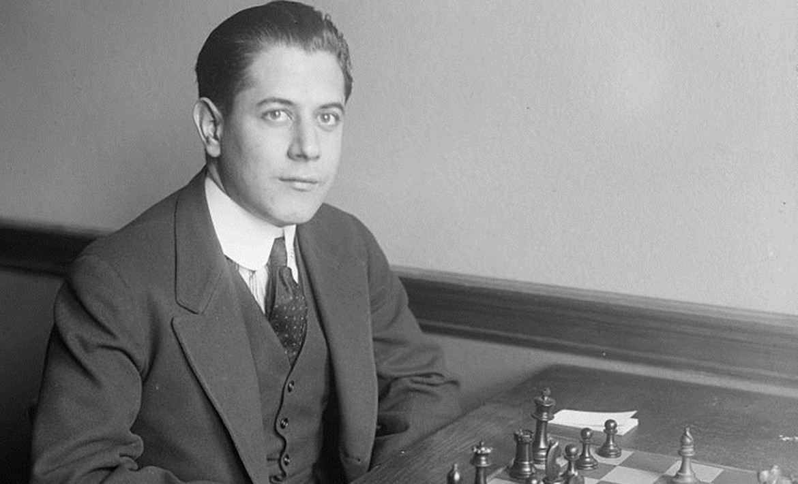
3. Jose Raul Capablanca
Cudowne dziecko z Kuby. Grał z tak niesamowitą lekkością i intuicją, że jego ruchy wyglądały na oczywiste... dopiero po fakcie. Mistrz prostoty, który nigdy nie przegrywał bez potrzeby.
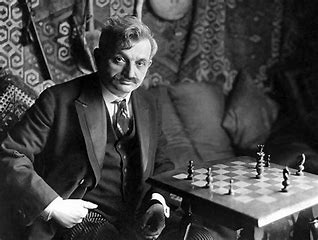
2. Emanuel Lasker
Matematyk, filozof i geniusz psychologii szachowej. Przez 27 lat nie oddał korony, potrafiąc zmieniać styl gry tak, by wyprowadzać przeciwników z równowagi. Niektórzy mówili, że gra nie tyle w szachy, co w umysły swoich rywali.
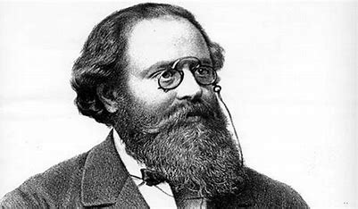
1. Wilhelm Steinitz
Pierwszy oficjalny mistrz świata w szachach. Znany jako ojciec nowoczesnej strategii. To on wprowadził pozycję, strukturę pionków i długoterminowe planowanie do świata szachów, który do tej pory znał głównie szalone ataki. Steinitz grał tak, jakby przewidywał XXI wiek.